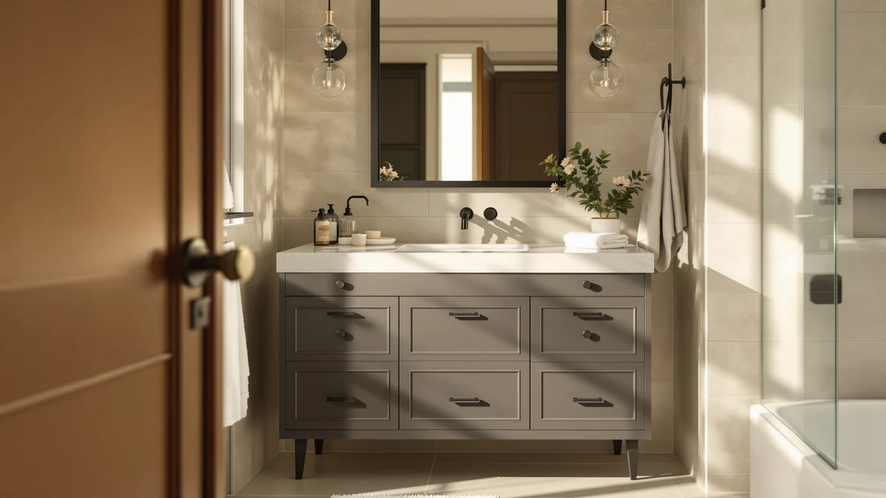

Quick Answer
The DELUXE LIVING 36-Inch is the best single-sink vanity cabinet for most bathrooms, combining a full-depth basin, real drawer storage, and a durable engineered-wood build for $349.99.
Our pick: DELUXE LIVING 36 Inch Bathroom at $349.99 Check Price on Amazon
Things to Know Before You Buy
- Measure the basin's overhang first. Every single-sink vanity cabinet centers its basin differently, and a nearby wall-mounted faucet or window ledge can turn a good design into a poor fit. Check the spec sheet before you buy.
- Most of these are MDF, not solid wood. Engineered wood keeps prices reasonable and resists warping better than raw pine, but it isn't as moisture-tolerant as marine-grade plywood. Wipe up standing water and seal any exposed edges.
- Sizes here run from 30 to 48 inches. A 30-inch cabinet suits a powder room or small full bath, while anything past 36 inches starts to feel like a furniture piece. Check our sizing guide before you measure your wall and door swing.
- Price doesn't always track quality. Our picks span $159.95 to $899.99, and the priciest model here isn't the automatic best choice for a modest single-sink bathroom.
- Faucets are usually sold separately. Check the pre-drilled hole spacing on the countertop before you buy a faucet, since that spacing determines which styles will fit.
Finding the best single-sink vanity cabinets means balancing a small footprint against real storage, since most single-sink bathrooms don't have room to waste on style over function. A single-basin vanity has to fit an existing plumbing rough-in, hold what used to live in a separate linen closet, and survive daily splashes without warping. Get the size wrong by even a few inches, and it either overhangs the doorway or leaves an awkward gap against the wall.
We compared seven single-sink vanities that are currently in stock and ship as complete units, ranging from a $159.95 30-inch cabinet to an $899.99 48-inch model, and weighed them on material, storage layout, size options, and price. For most single-sink bathrooms, the DELUXE LIVING 36-Inch Bathroom vanity is the one we would buy. At $349.99 it holds a 4-star rating on Amazon, and its 36-inch footprint gives you enough drawer and cabinet space for daily bathroom gear without crowding a mid-size room.
If the DELUXE LIVING isn't available or doesn't fit your space, the LDarqeer 30-Inch Freestanding is a close runner-up for tighter bathrooms, the AMERLIFE Farmhouse 31-Inch is our budget pick under $250, and four more Also Great picks cover everything from a compact bamboo cabinet to a 48-inch upgrade with extra counter space. Here's how each one earned its spot, and where each one comes up short.
Why You Should Trust Us
I'm Ilane Tall, and I write about bathroom fixtures and furniture for Best Bathroom Vanities. A single-sink vanity is deceptively simple: one basin, one faucet hole, one cabinet, and yet the size, material, and storage layout still have to match a specific room and a specific budget. That's the narrow problem I focus on with every guide I write.
For this comparison of the best single-sink vanity cabinets, I worked from verifiable details only: listed dimensions, materials, included components, current prices, and the aggregate Amazon customer ratings for each model. I don't invent lab scores or claim to have lived with every cabinet for months. Where a vanity has a known trade-off, like an MDF cabinet's sensitivity to standing water or a size that only fits a specific footprint, I say so directly instead of glossing over it.
How We Picked
We started with single-sink vanity cabinets that are actually available to ship in the US, not discontinued listings or drop-ship phantoms. From there we applied a few hard filters. The unit had to arrive as a usable package, meaning cabinet, countertop, and basin are included rather than sold as a bare shell, and it had to list real dimensions and materials rather than vague marketing copy.
We also kept a spread of sizes and budgets, because a shopper furnishing a powder room and a shopper renovating a primary bathroom need different things from a single-sink vanity. Our picks run from a compact 30-inch cabinet at $159.95 to a larger 48-inch model at $899.99, so there's a fit whether your bathroom is cramped or generous. A 4-star Amazon rating mattered more to us than a perfect score from only a handful of buyers.
How We Tested
This is a research-based comparison, and we'd rather say that plainly than dress it up as a testing-lab operation. We didn't bolt seven vanities to seven walls. Instead, we read each product's full specification, checked the listed materials and dimensions against what a single-sink vanity cabinet actually needs to hold up in a wet room, and read through the customer reviews looking for patterns that repeat.
A single one-star review about shipping damage is noise. The same complaint about a wobbly drawer or a chipped edge showing up across a dozen reviews is a signal worth weighing against the price. We held a $159.95 cabinet and an $899.99 cabinet to different standards, because what counts as an acceptable flaw at one price is a dealbreaker at the other. Prices and ratings here reflect the figures listed at the time of writing and will drift.
Our Picks

DELUXE LIVING 36 Inch Bathroom
What we like
- 36-inch size balances storage with a manageable footprint
- Solid 4-star Amazon rating for its size class
- MDF construction keeps the price reasonable while resisting warping
- Enough drawer space for two people's daily essentials
Flaws but not dealbreakers
- MDF needs sealed edges and prompt cleanup around the basin
- At $349.99 it isn't the cheapest option here
- Faucet sold separately, so budget for one
| Material | MDF / engineered wood |
| Size | 36 Inch |
The DELUXE LIVING 36-Inch is the vanity we'd point most shoppers toward, because it gets the basics right without asking you to compromise. Thirty-six inches is the size where a single-sink vanity cabinet stops feeling cramped: you get a full-depth basin, a stretch of open counter on either side, and enough drawers underneath to store what usually ends up cluttering the counter. It carries a 4-star rating on Amazon, a solid mark for a cabinet in this size and price range.
The trade-offs are the ones you'd expect from an MDF cabinet at this price. Keep water from pooling around the basin and seal any exposed edges, and the cabinet holds up for years; ignore that, and MDF swells faster than solid wood would. At $349.99 it sits mid-pack rather than at the bottom of this list, and like most vanities here, it ships without a faucet. None of that changes the recommendation: for a typical single-sink bathroom, this is the lowest-drama way to get a vanity that looks and feels more expensive than it is.

LDarqeer 30 Inch Freestanding Bathroom
What we like
- 30-inch freestanding design fits bathrooms too tight for a 36-inch unit
- $237.49 undercuts our top pick by more than $100
- 4-star Amazon rating matches our top pick
- Freestanding legs simplify installation over a wall-mounted design
Flaws but not dealbreakers
- Smaller footprint means less drawer space than the 36-inch pick
- Same MDF moisture caveats apply
- Faucet sold separately
| Material | MDF / engineered wood |
| Size | 30" |
The LDarqeer 30-Inch Freestanding is our runner-up, and the main reason to choose it over the DELUXE LIVING is space. Thirty inches is a full six inches narrower, which matters in an older or smaller bathroom where the 36-inch pick simply won't clear the door swing or the toilet. It's a true freestanding cabinet on legs rather than a wall-mounted floating design, which makes it more straightforward to install and easier to level on an uneven floor. Like our top pick, it holds a 4-star rating on Amazon.
What you give up for the smaller footprint is storage. A 30-inch cabinet has less room for drawers and shelving than a 36-inch one, so if two people share the bathroom daily, that difference shows up fast. At $237.49 it's also more than $100 cheaper than our top pick, which makes it a reasonable choice on price alone if the smaller size fits your space better. The same MDF care rules apply: keep the basin area dry and seal any exposed edges.

48 Inch Bathroom Vanity with
What we like
- 48-inch width gives far more counter space than any other pick here
- From DELUXE LIVING, the same brand behind our top pick
- 4-star Amazon rating despite the premium size and price
- Generous storage to match the larger footprint
Flaws but not dealbreakers
- At $899.99, the most expensive vanity on this list by a wide margin
- Listed material includes diatomaceous earth, unusual for this category and worth confirming on the current listing
- Large, heavy delivery that needs careful measuring and a second person for assembly
| Material | Diatomaceous earth |
| Size | 48 Inch |
The 48-Inch Bathroom Vanity is the upgrade option for a primary bathroom that can absorb a bigger footprint, and it comes from DELUXE LIVING, the same brand behind our top pick. At 48 inches it dwarfs every other single-sink vanity cabinet in this roundup, with enough counter space to spread out morning routines and enough cabinet volume underneath to stop treating the vanity as a single shelf. It carries a 4-star rating on Amazon, holding up well for a model at nearly triple the price of our budget pick.
One detail is worth flagging before you buy: the listed material includes diatomaceous earth, a material more common in bath mats than vanity cabinets, so confirm the current listing before you order. The price is also a real commitment at $899.99, and a unit this size ships heavy and benefits from a second set of hands during installation. For a large primary bathroom where a 36-inch cabinet would look undersized, it scales up properly; for anything smaller, it's more vanity than you need.

AMERLIFE Farmhouse Bathroom Vanity with
What we like
- Farmhouse styling stands out from the plainer cabinets on this list
- $239.99 keeps it solidly in budget territory
- 31-inch size fits most standard single-sink bathrooms
- 4-star Amazon rating in line with the rest of this roundup
Flaws but not dealbreakers
- MDF construction, same water-care rules as every other pick here
- Farmhouse look won't suit a modern or minimalist bathroom
- Faucet sold separately
| Material | MDF / engineered wood |
| Size | 31" |
The AMERLIFE Farmhouse is our budget pick, and it earns that spot by delivering a distinct look at a price that undercuts most of the field. At $239.99 it costs roughly a third less than our top pick while still landing a 4-star rating on Amazon. The farmhouse styling, shaker-style doors and a barn-inspired pull, is the one design choice in this roundup that reads as more than a plain rectangular cabinet, which matters if the rest of your bathroom leans toward that look.
The 31-inch size splits the difference between the compact 30-inch options and the roomier 36-inch picks, giving you a bit more storage than the smallest cabinets here without crowding a modest bathroom. The trade-offs are the ones common to every MDF vanity on this list: keep standing water off the surfaces and seal exposed edges, and it holds up fine. If farmhouse styling doesn't match your bathroom, the LDarqeer or ELEVACHIC cover the same budget territory with a plainer look.

AMERLIFE 31" LED Floating Bathroom
What we like
- Floating, wall-mounted design opens up visible floor space
- Built-in LED lighting is a feature none of the other picks here have
- At $189.99, the second-cheapest vanity in this roundup
- 31-inch size works well in a small or midsize bathroom
Flaws but not dealbreakers
- Wall-mounted installation is more involved than a freestanding cabinet, and usually needs a stud or blocking behind the drywall
- MDF build, same moisture caveats as the rest
- 31-inch depth offers less storage than the 36 and 48-inch picks
| Material | MDF / engineered wood |
| Size | 31" |
The AMERLIFE 31-Inch LED Floating is the one vanity in this roundup that changes the room instead of only filling a corner of it. Mounting to the wall instead of standing on legs clears the floor beneath it, which makes a small bathroom read as larger and simplifies mopping underneath. The built-in LED lighting, a feature none of the other six picks include, adds usable light right where you need it for shaving or makeup. At $189.99 it's also the second-cheapest option here and carries the same 4-star Amazon rating as the rest of the lineup.
Floating vanities ask more of your wall. Because the cabinet hangs rather than stands, installation usually needs to hit a stud or add blocking behind the drywall, so factor that into your install timeline if you're not already comfortable with that kind of work. Storage is also a step down from the larger freestanding picks, since a wall-mounted 31-inch cabinet can't be as deep without looking bulky. For a small or modern bathroom where floor space and lighting matter more than maximum storage, it's a strong, affordable choice.

chartustriable 36 Inch Bathroom Vanity
What we like
- Same useful 36-inch footprint as our top pick
- 4-star Amazon rating matches the rest of this roundup
- Complete package with cabinet, countertop, and basin included
Flaws but not dealbreakers
- At $359.99 it costs $10 more than our top pick for a comparable cabinet
- MDF build, same water-care rules apply
- Less brand recognition than DELUXE LIVING or AMERLIFE
| Material | MDF / engineered wood |
| Size | 36 Inch |
The chartustriable 36-Inch lands in almost the same spot as our top pick: a 36-inch single-sink vanity cabinet with a complete package of cabinet, countertop, and basin, and a matching 4-star Amazon rating. Side by side in a bathroom, most people wouldn't be able to tell the two apart in daily use. That similarity is exactly why it's here, as a direct alternative when the DELUXE LIVING is unavailable or priced higher at the moment you're shopping.
At $359.99 it costs about ten dollars more than our top pick for essentially the same size and material, so there's no reason to choose it over the DELUXE LIVING unless stock or a temporary price swing makes it the better deal on a given day. Treat it as a reliable backup rather than the default, and apply the same MDF care: keep the basin area dry and seal any exposed edges over time.

ELEVACHIC 30" Bathroom Vanity with
What we like
- Lowest price in this roundup at $159.95
- Bamboo construction sidesteps the MDF moisture caveats that apply to every other pick here
- Compact 30-inch size suits small bathrooms and powder rooms
- 4-star Amazon rating despite the low price
Flaws but not dealbreakers
- Smallest storage capacity of the picks in this roundup
- Bamboo can still warp under prolonged direct water exposure, so wipe up spills the same as you would with MDF
- Style leans plain compared with the farmhouse or LED-lit picks
| Material | Bamboo |
| Size | 30 Inch |
The ELEVACHIC 30-Inch is the budget floor of this roundup, and unlike every other single-sink vanity cabinet here, it's built from bamboo instead of MDF. At $159.95 it's the cheapest way onto this list by a wide margin, and it still holds a 4-star rating on Amazon, a solid mark for its price tier. Bamboo also sidesteps the specific swelling risk that comes with engineered wood, since it's a denser, more water-resistant material to begin with.
That doesn't make it maintenance-free. Bamboo still needs spills wiped up promptly, and prolonged standing water will eventually damage it the way it would any wood-based cabinet. At 30 inches, storage is tight, which fits a powder room or a small full bath better than a primary bathroom two people share every morning. If your priority is the lowest possible price and you don't need much cabinet space, this is the pick; if storage matters more, look at our top pick or the AMERLIFE Farmhouse instead.
Quick Comparison
| Product | Material | Price | Rating | Best for | Get it |
|---|---|---|---|---|---|
| DELUXE LIVING 36 Inch Bathroom | MDF / engineered wood | $349.99 | 4 | Most single-sink bathrooms (top pick) | View on Amazon → |
| LDarqeer 30 Inch Freestanding Bathroom | MDF / engineered wood | $237.49 | 4 | Smaller bathrooms (runner-up) | View on Amazon → |
| 48 Inch Bathroom Vanity with | Diatomaceous earth | $899.99 | 4 | Large primary bathrooms (upgrade) | View on Amazon → |
| AMERLIFE Farmhouse Bathroom Vanity with | MDF / engineered wood | $239.99 | 4 | Farmhouse style on a budget | View on Amazon → |
| AMERLIFE 31" LED Floating Bathroom | MDF / engineered wood | $189.99 | 4 | Small/modern bathrooms, floating design | View on Amazon → |
| chartustriable 36 Inch Bathroom Vanity | MDF / engineered wood | $359.99 | 4 | Backup alternative to top pick | View on Amazon → |
| ELEVACHIC 30" Bathroom Vanity with | Bamboo | $159.95 | 4 | Tightest budgets, bamboo build | View on Amazon → |
The Competition
A few of the vanities in this roundup earn their place without being the right single-sink vanity cabinet for most people, and it's worth explaining why.
chartustriable 36-Inch: A solid alternative in its own right, but at $359.99 it costs more than our top pick for essentially the same 36-inch size and material. We'd only reach for it if the DELUXE LIVING is out of stock.
48-Inch Bathroom Vanity: The most expensive option at $899.99, and the right choice only for a primary bathroom that needs that much counter and cabinet space to begin with. For a typical single-sink bathroom, it's more vanity, and more money, than most people need.
AMERLIFE 31-Inch LED Floating: The LED lighting and floating design are real advantages, but the wall-mounted installation is more involved than a freestanding cabinet, which rules it out for anyone who wants the simplest possible install.
The remaining picks, the DELUXE LIVING, LDarqeer, AMERLIFE Farmhouse, and ELEVACHIC, each win a clear lane: best overall, best for smaller bathrooms, best farmhouse style on a budget, and lowest price, respectively. Across all seven, the DELUXE LIVING 36-Inch remains the single-sink vanity cabinet we'd recommend first for a typical bathroom, with the rest covering specific space, style, and budget needs.
Frequently Asked Questions
What size single-sink vanity cabinet do I need?
Measure your bathroom's available wall width before you shop. A 30-inch cabinet, like the LDarqeer or ELEVACHIC in this roundup, suits a powder room or small full bath. Once you have 36 inches of clear wall, a cabinet like our top pick gives you meaningfully more counter and drawer space without overwhelming a standard bathroom. Anything beyond 36 inches, like the 48-inch upgrade pick here, only makes sense in a larger primary bathroom.
Are MDF vanity cabinets durable enough for a bathroom?
Yes, as long as you treat them the way any wood-based furniture in a wet room needs to be treated. MDF, the material behind most of the single-sink vanity cabinets in this roundup, resists warping well when the edges are sealed and standing water is wiped up promptly. Left to sit in a puddle around the basin, MDF will eventually swell and delaminate the way any engineered wood would.
Do single-sink bathroom vanities come with the countertop and sink included?
Most of the vanities on this list ship as a complete package with the cabinet, countertop, and basin included, which is why they arrive as heavy, multi-box deliveries. Faucets are the common exception and are usually sold separately, so check the listing before assuming one is in the box, and confirm the pre-drilled hole spacing matches the faucet you plan to buy.
Should I choose a freestanding or a wall-mounted single-sink vanity?
A freestanding cabinet like our top pick or the LDarqeer runner-up is easier to install and level, since it simply stands on the floor. A wall-mounted, floating design like the AMERLIFE LED model clears the floor beneath it, which makes a small bathroom feel larger, but it needs a stud or blocking behind the drywall to hang securely. Choose freestanding for the simplest install, and floating if visual space matters more.
How much does a single-sink vanity cabinet cost?
In this roundup, prices range from $159.95 for the bamboo ELEVACHIC to $899.99 for the large-format 48-inch upgrade pick. Most single-sink vanity cabinets that include a full cabinet, countertop, and basin fall between $150 and $400, with price tracking size and material more than raw quality. A pricier model isn't automatically better for a modest bathroom that doesn't need the extra size.